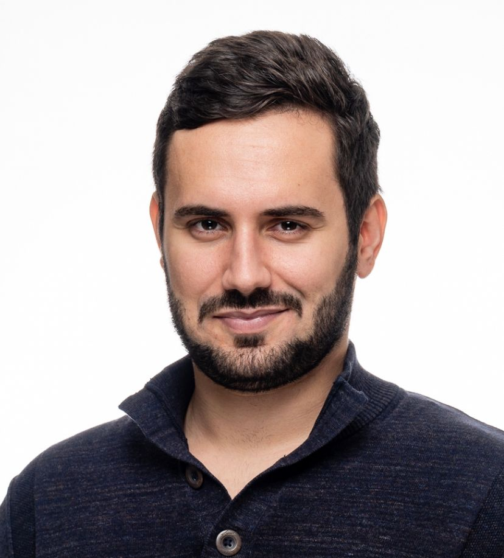

Channel Estimation
Channel estimation and beamforming for wireless communication systems, with a focus on MIMO, mmWave and out-of-band aided systems.
Wireless Communications · RF Systems · 6G
Postdoctoral Researcher
Institute of Telecommunications, TU Wien

About
Faruk Pasic was born in 1994 in Mostar, Bosnia and Herzegovina. He received the B.Sc. degree in electrical engineering from the University of Sarajevo, Bosnia and Herzegovina, in 2017, the Dipl.-Ing. degree (M.Sc. equivalent) in telecommunications engineering from the Technical University (TU) Wien, Austria, in 2021, and the Dr. Techn. degree (Ph.D. equivalent) in telecommunications engineering from TU Wien, Austria, in 2026.
He joined the Institute of Telecommunications, TU Wien, in 2019, where he has been a Postdoctoral Researcher in the Wireless Communications Research Group since 2026. He was a Visiting Researcher at the University of Southern California, Los Angeles, CA, USA, in 2024, and at the Department of Electrical and Information Technology, Lund University, Sweden, in 2025.
His research interests include wireless channel measurements and modeling, channel estimation, millimeter-wave (mmWave) technology, MIMO systems, and out-of-band aided communication.
Research
Channel estimation and beamforming for wireless communication systems, with a focus on MIMO, mmWave and out-of-band aided systems.
Multi-band wireless systems spanning sub-6 GHz and mmWave frequencies, including out-of-band aided mmWave communication and cross-band channel information.
Experimental characterization, modeling and analysis of wireless channels, including delay, angular and temporal channel properties. Propagation studies and channel modeling for emerging mmWave and mid-band frequency ranges.
Data-driven and physically-inspired approaches for channel modeling, estimation and prediction of wireless communication systems.
Publications
IEEE Transactions on Vehicular Technology, 2025
IEEE Open Journal of the Communications Society, 2025
IEEE Transactions on Communications, 2025
e+i Elektrotechnik und Informationstechnik, 2025
IEEE Transactions on Wireless Communications, 2024
IEEE Open Journal of Vehicular Technology, 2024
20th International Symposium on Wireless Communication Systems (ISWCS), Gold Coast, Australia, August 2026
International Conference “New Technologies, Development and Applications” (NT), Sarajevo, Bosnia and Herzegovina, June 2026
Joint European Conference on Networks and Communications & 6G Summit (EuCNC/6G Summit), Málaga, Spain, June 2026
IEEE International Workshop on Antenna Technology (iWAT), Liverpool, United Kingdom, March 2026
IEEE Radio and Antenna Days of the Indian Ocean (RADIO), Flic-en-Flac, Mauritius, October 2025
IEEE Conference on Computer Communications Workshops (INFOCOM WKSHPS), London, United Kingdom, May 2025
19th European Conference on Antennas and Propagation (EuCAP), Stockholm, Sweden, April 2025
19th European Conference on Antennas and Propagation (EuCAP), Stockholm, Sweden, April 2025
IEEE 27th International Conference on Intelligent Transportation Systems (ITSC), Edmonton, AB, Canada, September 2024
IEEE 35th International Symposium on Personal, Indoor and Mobile Radio Communications (PIMRC), Valencia, Spain, September 2024
International Conference on Smart Applications, Communications and Networking (SmartNets), Harrisonburg, VA, USA, May 2024
18th European Conference on Antennas and Propagation (EuCAP), Glasgow, United Kingdom, March 2024
IEEE 34th Annual International Symposium on Personal, Indoor and Mobile Radio Communications (PIMRC), Toronto, ON, Canada, September 2023
XXXVth General Assembly and Scientific Symposium of the International Union of Radio Science (URSI GASS), Sapporo, Japan, August 2023
IEEE 97th Vehicular Technology Conference (VTC2023-Spring), Florence, Italy, June 2023
56th Asilomar Conference on Signals, Systems, and Computers, Pacific Grove, CA, USA, November 2022
International Balkan Conference on Communications and Networking (BalkanCom), Sarajevo, Bosnia and Herzegovina, August 2022
International Conference on Electrical, Computer and Energy Technologies (ICECET), Prague, Czech Republic, July 2022
16th European Conference on Antennas and Propagation (EuCAP), Madrid, Spain, March 2022
25th International ITG Workshop on Smart Antennas (WSA), French Riviera, France, November 2021
18th International Symposium INFOTEH-JAHORINA (INFOTEH), East Sarajevo, Bosnia and Herzegovina, March 2019
Academic Service
Contact
For research collaborations, publications, or other professional inquiries, feel free to get in touch.